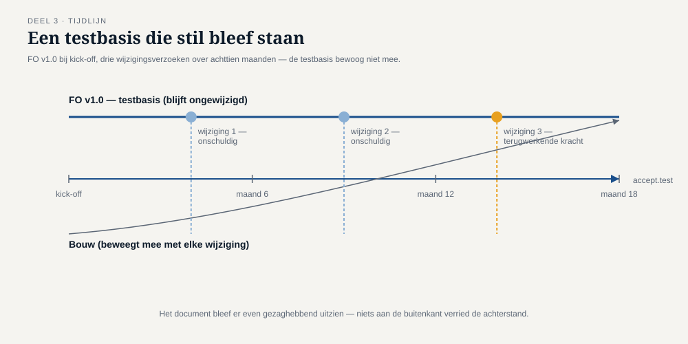
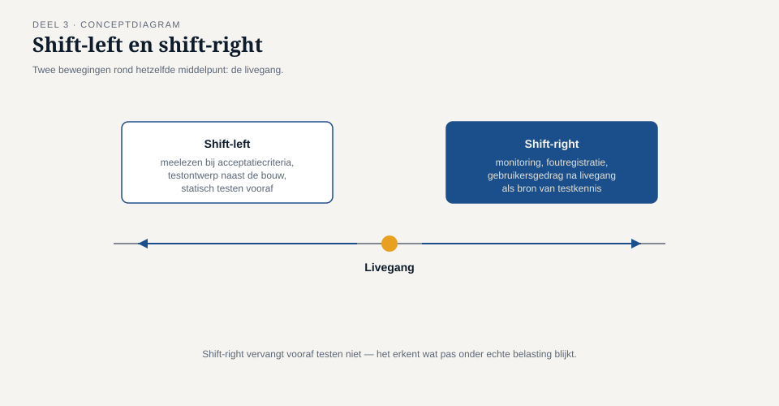

Deel 3 — Testen in de levenscyclus
Slidedeck · Ductus-cursus Testen en Kwaliteitsborging · niveau 1 · deel 3 van 30 · 27 slides
Slidetypen: titleSlide, sectionSlide, bulletsSlide, statementSlide, quoteSlide, tableSlide, figureSlide, opdrachtSlide.
Slide 1 — titleSlide
Testen in de levenscyclus Deel 3 · Niveau 1 Fundament Cursus Testen en Kwaliteitsborging
Slide 2 — statementSlide
Het functioneel ontwerp zag er nog precies zo gezaghebbend uit als op dag één.
Drie wijzigingen verder was het niet meer waar.
Slide 3 — figureSlide

Slide 4 — statementSlide
Een testbasis veroudert niet met een knal.
Zij veroudert geruisloos, wijziging voor wijziging — en het document blijft er even gezaghebbend uitzien.
Dit is bevinding T3.
Slide 5 — opdrachtSlide
Opdracht 3.1 — Waar zat de veroudering?
Wanneer ontstond de kloof? Waarom viel het niemand op — minstens twee redenen zonder een individu de schuld te geven.
15 minuten, individueel.
Slide 6 — sectionSlide
1. Ontwikkelaanpak
Slide 7 — bulletsSlide
Watervalachtig vs. iteratief
- Watervalachtig: lange periode waarin de testbasis kan verouderen
- Iteratief/continu: korte periode — maar regressierisico verschuift naar de backlog
Niet zorgvuldiger. Korter kwetsbaar.
Slide 8 — figureSlide

Slide 9 — statementSlide
Shift-left = eerder beginnen.
Niet: sneller testen. Niet: meer testen.
Slide 10 — statementSlide
Shift-right is geen excuus om vooraf minder te testen.
Aanvaardbaar voor een schermindeling. Niet aanvaardbaar voor de kernberekening.
Slide 11 — sectionSlide
2. Testniveaus
Slide 12 — figureSlide

Slide 13 — tableSlide
Elk niveau, eigen testbasis
| Niveau | Testbasis | Typische afwijking |
|---|---|---|
| Component | technisch ontwerp, code | logicafout in één onderdeel |
| Integratie | koppelvlakontwerp | verkeerde aanname over het koppelvlak |
| Systeem | functioneel + niet-functioneel ontwerp | gedrag op systeemniveau |
| Acceptatie | eisen, bedrijfsproces, wetgeving | doet wat er staat, niet wat nodig is |
Slide 14 — statementSlide
Als een afwijking op het verkeerde niveau wordt gezocht, wordt zij niet gevonden —
ongeacht hoeveel tijd je eraan besteedt.
Slide 15 — opdrachtSlide
Opdracht 3.2 — Niveau of type?
Vier bevindingen. Welk testniveau had dit moeten vinden?
10 minuten, individueel.
Slide 16 — bulletsSlide
Drie soorten acceptatietest
- Functioneel — doet het wat de eisen zeggen?
- Operationeel — kan beheer het draaien?
- Regelgevend / contractueel — voldoet het aan wet of toezicht?
WGP 2.0 deed alleen de eerste.
Slide 17 — sectionSlide
3. Confirmatie- en regressietesten
Slide 18 — tableSlide
Twee vragen, twee testen
| Confirmatietest | Regressietest | |
|---|---|---|
| Vraag | Is déze afwijking nu weg? | Is er ergens anders iets stukgegaan? |
| Testgevallen | dezelfde als bij de vondst | een bredere, vaste selectie |
Meest gemaakte examenfout van de hele syllabus.
Slide 19 — statementSlide
Een confirmatietest bewijst dat je oploste wat je dacht op te lossen.
Een regressietest bewijst dat je daarbij niets anders stukmaakte.
Het eerste zonder het tweede is een halve garantie.
Slide 20 — opdrachtSlide
Opdracht 3.3 — Confirmatie of regressie?
Vier situaties, plus: waarom is "alleen confirmeren om tijd te besparen" risicovol?
15 minuten, tweetallen.
Slide 21 — opdrachtSlide
Opdracht 3.4 — Shift-left toepassen
Iris mag aanschuiven bij refinement van het Mutatieplatform. Wat doet ze? Waar ligt de grens met de business analyst?
20 minuten, groepjes van drie.
Slide 22 — sectionSlide
4. Onderhoudstesten
Slide 23 — bulletsSlide
Oud systeem, ander risico
- Testbasis vaak minder compleet — "hoe het hoort" wordt "hoe het nu werkt"
- Impactanalyse is het verplichte startpunt
- Oorspronkelijke bouwers vaak weg — WGP 1.0, sinds 2013
Slide 24 — bulletsSlide
TMAP-lens
- Daar: teststages, grotendeels gelijktijdig, gedragen door het hele team
- Shift-left is er geen aparte praktijk maar de standaardtoestand
WGP 2.0 (aparte fasen) vs. het Mutatieplatform (niveau 2, TMAP-gedachte)
Slide 25 — bulletsSlide
Examenaansluiting — CTFL hoofdstuk 2
- Testniveaus, testtypen, onderhoudstesten
- Shift-left/shift-right
Let op: confirmatie ≠ regressie — de meest gemaakte fout.
Slide 26 — bulletsSlide
Huiswerk
- Opdracht 3.5 — onderhoudstesten aan WGP 1.0 (startpunt deel 4)
- Oefentoets, tien vragen
Slide 27 — statementSlide
Volgende keer: statisch testen
De tegenstrijdigheid stond er al. Een review van een uur had haar gevonden. Dit sluit T4.